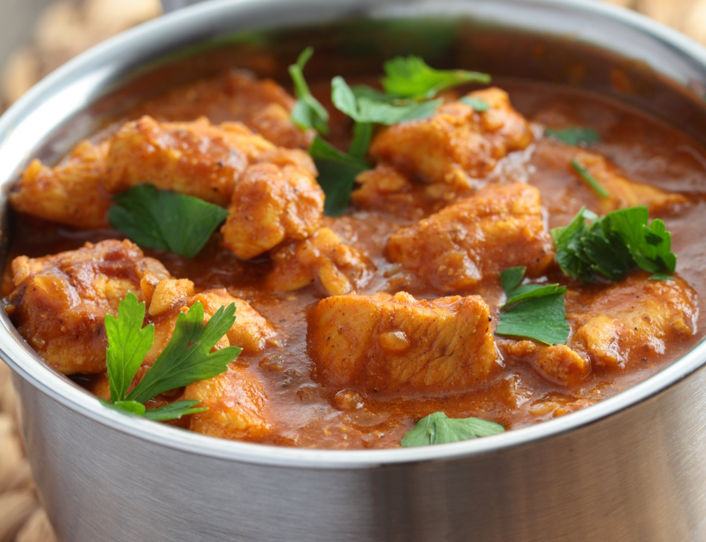

Chicken Curry

Here's a pretty simple chicken curry recipe, using common ingredients. And it isn't too spicy, either.
Ingredients
- 2tbsp. extra-virgin olive oil
- 1 medium yellow onion, chopped
- 2lb. boneless skinless chicken breasts, cut into 1" pieces
- 3 cloves garlic, minced
- 1 tbsp. minced ginger
- 1 1/2 tsp. paprika
- 1 1/2 tsp. ground turmeric
- 1 1/2 tsp. ground coriander
- 1 tsp. ground cumin
- 1 can (15 oz.) crushed tomatoes
- 1 1/2 c. low-sodium chicken broth
- 1/2 c. heavy cream
- Kosher salt
- Freshly ground black pepper
- Basmati rice or naan, for serving
- 1 tbsp. freshly chopped cilantro, for garnish
Steps
- In a large pot over medium-high heat, heat oil. Add onion and cook until soft, 5 minutes.
Add chicken and sear until no pink remains. Stir in garlic and ginger and cook until fragrant.
- Add spices and cook until very fragrant. Add tomatoes and broth and bring to a simmer.
Stir in heavy cream and season with salt and papper. Simmer until chicken pieces are cooked
throgh and tender about 15 to 20 minutes.
- Serve over rice or with naan, garnished with cilantro.
Return to Home